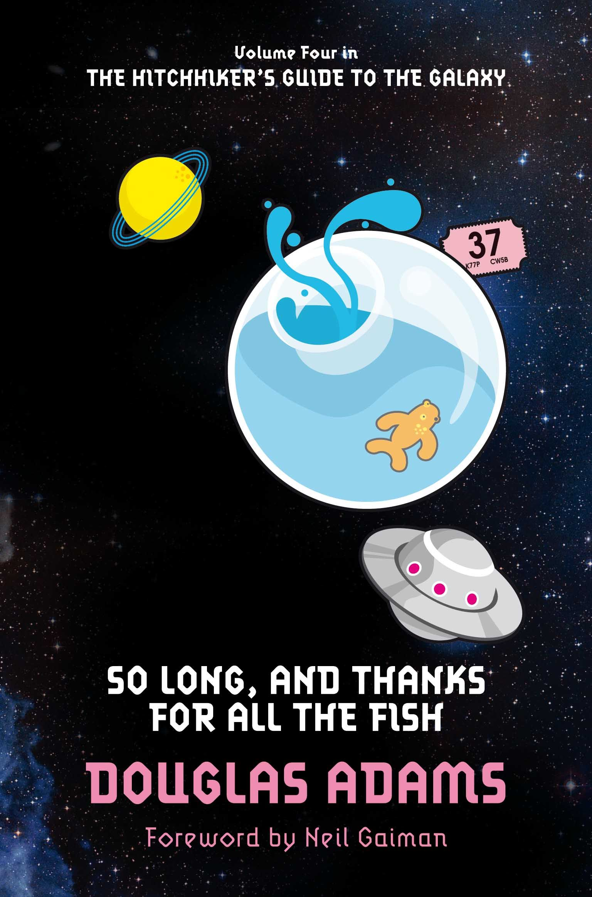

So Long, and Thanks for All the Fish (Book 4)
Synopsis
Back on Earth with nothing more to show for his long, strange trip through time and space than a ratty towel and a plastic shopping bag, Arthur Dent is ready to believe that the past eight years were all just a figment of his stressed-out imagination. But a gift-wrapped fishbowl with a cryptic inscription, the mysterious disappearance of Earth's dolphins, and the discovery of his battered copy of The Hitchhiker's Guide to the Galaxy all conspire to give Arthur the sneaking suspicion that something otherworldly is indeed going on. . . .
Download PDF